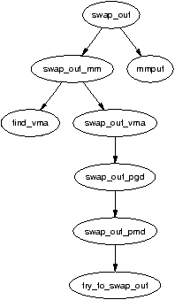
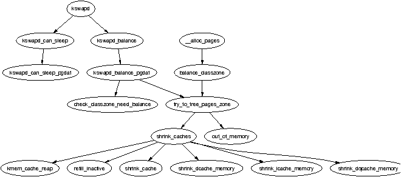

一个长期运行的系统迟早会把所有可用的页帧用于磁盘缓冲区、目录项、inode 项、进程页等等用途。在物理内存被耗尽之前，Linux 需要选出可以释放并使其失效以便重新使用的旧页面。本章将专门讨论 Linux 如何实现其页置换策略，以及不同类型的页面是如何被作废的。
Linux 选页所使用的方法相当经验化，其背后的理论也是由多种不同思想综合而来。实践中已经证明这套方法运作良好，并会根据用户反馈和基准测试持续调整。本章首先讨论的就是页置换策略的基本要点。
第二个讨论主题是页缓存（page cache）。所有从磁盘读上来的数据都会被存入页缓存，以减少必须执行的磁盘 I/O 数量。严格说来这与页帧回收并无直接关系，但 LRU 链表与页缓存是紧密相关的。相关小节将聚焦于页是如何被加入页缓存以及如何被快速定位的。
这样我们就引出了第三个主题——LRU 链表。除 slab 分配器外，系统所使用的所有页面都被保存在 LRU 链表上，并通过 page→lru 串联起来，以便能方便地扫描以进行置换。slab 页之所以不放在 LRU 链表上，是因为按 slab 所用的对象给一个页定义“年龄”要困难得多。相应章节将聚焦于页在被回收前如何在 LRU 链表之间迁移。
接下来我们将介绍其他缓存——如 dcache 和 slab 分配器——中页面的回收方式，然后讨论进程映射页面的移除。进程映射的页面并不容易换出，因为除了搜索每张页表（这代价过于高昂）之外，没有别的办法把 struct page 映射回 PTE。如果页缓存中含有大量进程映射页，swap_out() 函数将遍历进程页表并把页换出，直到释放出足够多的页为止；但这一过程在面对共享页时仍然棘手。如果一个页是共享的，将为它分配一个换出表项（swap entry），把找到该页所必须的信息填入 PTE 并将引用计数减一。只有当计数降到 0 时，这个页才会被真正释放。这种页被认为存在于交换缓存（swap cache）中。
最后，本章将讨论页换出守护进程 kswapd，包括它是如何实现的以及它的职责所在。
在讨论时人们常把页置换策略说成是基于最近最少使用（Least Recently Used，LRU）的算法，但严格来说这并不准确，因为这些链表并非严格按 LRU 顺序维护。Linux 中的 LRU 由两条链表组成，分别叫做 active_list 和 inactive_list。其目标是让 active_list 包含所有进程的工作集（working set）[Den70]，让 inactive_list 包含回收候选者。由于所有可回收页都仅存在于这两条链表中，且属于任意进程的页都可能被回收（而不仅限于属于触发缺页的那个进程），因此该置换策略是全局性的。
这两条链表形似简化版的 LRU 2Q [JS94]，其中维护了两条名为 Am 和 A1 的链表。在 LRU 2Q 中，页首次分配时被放到一条名为 A1 的 FIFO 队列上；如果在该队列上被再次引用，则被放入名为 Am 的常规 LRU 链表。这大致相当于用 lru_cache_add() 把页放到名为 inactive_list（A1）的队列上，用 mark_page_accessed() 把它迁移到 active_list（Am）。该算法描述了如何调节两条链表的大小，而 Linux 采取了更为简单的做法——使用 refill_inactive() 把 active_list 末端的页移到 inactive_list，使 active_list 大致保持为整个页缓存大小的三分之二左右。图 10.1 展示了这两条链表的组织方式、页是如何被加入的，以及 refill_inactive() 如何在两条链表之间迁移页面。
2Q 所描述的链表假设 Am 是一条 LRU 链表，但 Linux 中的链表更像 Clock 算法 [Car84]，其指针的“跨度”就是 active 链表的大小。当页到达链表底端时，会检查它的 referenced 标志：若已置位则被清除并移到链表头部，再检查下一个页；若未置位则被移到 inactive_list。
“前移启发式（Move-To-Front heuristic）”意味着这两条链表表现出近似 LRU 的行为，但 Linux 的置换策略与 LRU 之间差异过大，不能将其视为栈算法 [MM87]。即便我们不去理会多道程序系统的分析问题 [CD80]，也不考虑每个进程的内存大小并非固定这一事实，该策略也并不满足包含性质（inclusion property），因为页在链表中的位置在很大程度上取决于链表的大小而不是上次引用的时间。链表也不是按优先级排序的，否则每次引用都需要更新链表。最后一根钉子是：从进程换出页时，这些链表几乎被忽略，因为换页的决定与该页在进程虚拟地址空间中的位置有关，而不是它在页链表中的位置。
总的来说，该算法表现出类似 LRU 的行为，且基准测试表明其实际性能良好。只有两种情况下该算法可能表现得相当糟糕。第一种是回收候选者主要是匿名页时。这种情况下 Linux 会反复检查大量页面，然后才线性扫描进程页表以寻找可回收页，但所幸这种情况很少见。
第二种情形是只有一个进程，但其在 inactive_list 中有许多基于文件的常驻页正在被频繁写入。此时进程和 kswapd 可能陷入一个循环——不断“洗涤（laundering）”这些页面并把它们重新放到 inactive_list 顶端，而没有真正释放任何页。在这种情况下，从 active_list 移到 inactive_list 的页很少，因为两条链表大小的比例并未显著变化。
页缓存是一组数据结构，其中包含由常规文件、块设备或交换区作为后备的页面。缓存中大致存在四种类型的页：
该缓存存在的主要原因是为了消除不必要的磁盘读取。从磁盘读到的页被存放到一个页哈希表（page hash）中，该表以 struct address_space 和偏移量为键，访问磁盘前都会先查询此表。相应的 API 用于操作页缓存，列于表 10.1。
| void add_to_page_cache(struct page * page, struct address_space * mapping, unsigned long offset) |
| 通过 lru_cache_add() 把页添加到 LRU，同时把它加入 inode 队列和页哈希表。 |
| void add_to_page_cache_unique(struct page * page, struct address_space *mapping, unsigned long offset, struct page **hash) |
| 与 add_to_page_cache() 类似，但会检查该页是否已在页缓存中。当调用方没有持有 pagecache_lock 自旋锁时需要使用此函数。 |
| void remove_inode_page(struct page *page) |
| 通过 remove_page_from_inode_queue() 与 remove_page_from_hash_queue() 把页从 inode 队列和哈希队列中移除，从而把页从页缓存中实质性地移除。 |
| struct page * page_cache_alloc(struct address_space *x) |
| 对 alloc_pages() 的封装，使用 x→gfp_mask 作为 GFP 掩码。 |
| void page_cache_get(struct page *page) |
| 把已在页缓存中的某个页的引用计数加一。 |
| int page_cache_read(struct file * file, unsigned long offset) |
| 若 file 中偏移 offset 处对应的页尚未存在，则把该页加入页缓存。如有需要，会通过 address_space_operations→readpage 函数从磁盘读取该页。 |
| void page_cache_release(struct page *page) |
| __free_page() 的别名。引用计数减一，若降到 0 则释放该页。 |
页缓存中的页必须能够被快速定位。为此，页被插入到一张名为 page_hash_table 的表中，并使用 page→next_hash 与 page→pprev_hash 字段处理冲突。
该表在 mm/filemap.c 中声明如下：
45 atomic_t page_cache_size = ATOMIC_INIT(0); 46 unsigned int page_hash_bits; 47 struct page **page_hash_table;
该表在系统初始化时由 page_cache_init() 分配，其参数是系统中的物理页数量。期望的表大小（htable_size）足以容纳系统中每个 struct page 的指针，计算公式为：
htable_size = num_physpages * sizeof(struct page *)
为分配该表，系统首先尝试分配一个足以容纳整张表的 order 阶数。它从 0 开始递增，直到 2order > htable_size 为止。这大致可以表达为下式的整数部分：
order = log2(num_physpages * 2 - 1)
然后用 __get_free_pages() 尝试以该阶数分配。如果失败，会逐级降阶重试；若全部分配尝试都失败，系统将 panic。
page_hash_bits 的值依据表的大小而定，用于哈希函数 _page_hashfn()。其值通过反复除 2 算得，实际等价于：
page_hash_bits = log2( (PAGE_SIZE * 2^order) / (sizeof(struct page *)) )
这使得该表的大小为 2 的幂，从而免去通常哈希函数所采用的求模运算。
Inode 队列是 4.4.2 节所介绍的 struct address_space 的一部分。该结构包含三条链表：clean_pages 是与该 inode 关联的干净页链表；dirty_pages 是自上次同步到磁盘之后被写过的页；locked_pages 是当前被加锁的页。对于给定的映射，这三条链表共同被视为它的 inode 队列，page→list 字段用于把页串到该队列上。页通过 add_page_to_inode_queue() 加入该队列（放到 clean_pages 上），通过 remove_page_from_inode_queue() 移除。
从文件或块设备读上来的页一般都会被加入页缓存以避免后续磁盘 I/O。大多数文件系统使用高级函数 generic_file_read() 作为它们的 file_operations→read()。第 12 章讨论的共享内存文件系统是一个值得注意的例外，但总的来说文件系统都通过页缓存执行其操作。在本节中，我们以 generic_file_read() 为例说明它如何工作以及如何把页加入页缓存。
对于普通 I/O1，generic_file_read() 先做几项基本检查，然后调用 do_generic_file_read()。该函数在持有 pagecache_lock 的情况下调用 __find_page_nolock() 搜索页缓存，查看页是否已经存在。如果不存在，则用 page_cache_alloc()（其只是 alloc_pages() 的简单封装）分配新页，并通过 __add_to_page_cache() 加入页缓存。一旦页帧已在页缓存中，便调用 generic_file_readahead()，它通过 page_cache_read() 从磁盘读入该页。读取过程使用 mapping→a_ops→readpage()，其中 mapping 是管理该文件的 address_space。readpage() 是文件系统特有的、用于从磁盘读页的函数。
匿名页在被进程取消映射时会被加入交换缓存，详情见 11.4 节。在尝试换出它们之前，它们没有担任映射作用的 address_space，也没有任何文件内的偏移，没有可用于把它们哈希到页缓存的依据。不过要注意这些页依然存在于 LRU 链表上。进入交换缓存之后，匿名页与文件页之间唯一真正的区别就是匿名页使用 swapper_space 作为它们的 struct address_space。
共享内存页在两种情形之一下被加入：第一种是 shmem_getpage_locked()，当页面需要从交换区取回，或因为是第一次引用而被分配时调用；第二种是当换出代码调用 shmem_unuse() 时。这发生在某个交换区被停用且发现一个由交换空间作为后备的页似乎不属于任何进程的时候。此时会穷尽搜索与共享内存相关的 inode，直到找到对应的页。两种情形下页都通过 add_to_page_cache() 加入。
如10.1 节所述，LRU 链表由两条链表组成，分别叫做 active_list 和 inactive_list。它们在 mm/page_alloc.c 中声明，并由 pagemap_lru_lock 自旋锁保护。概括地说，它们分别存储“热”页和“冷”页；换言之，active_list 含有系统中所有的工作集，inactive_list 则含有回收候选者。处理 LRU 链表的 API 列于表 10.2。
| void lru_cache_add(struct page * page) |
| 把一个冷页加到 inactive_list。如果已知该页是热的（例如缺页换入时），随后会调用 mark_page_accessed() 把它移至 active_list。 |
| void lru_cache_del(struct page *page) |
| 把页从 LRU 链表上移除，根据情况调用 del_page_from_active_list() 或 del_page_from_inactive_list()。 |
| void mark_page_accessed(struct page *page) |
| 标记某页被访问过。如果它最近没有被引用（位于 inactive_list 且 PG_referenced 未置位），则置位 referenced 标志。如果它被再次引用，则调用 activate_page() 将其标记为热页并清除 referenced 标志。 |
| void activate_page(struct page * page) |
| 把页从 inactive_list 移到 active_list。由于调用方必须确保该页位于 inactive_list，因此很少被直接调用。一般应使用 mark_page_accessed()。 |
当缓存被收缩时，refill_inactive() 函数会把页从 active_list 移到 inactive_list。其参数为要迁移的页数，该值在 shrink_caches() 中按一定比例计算，依赖于 nr_pages、active_list 中的页数和 inactive_list 中的页数。要迁移的页数计算公式为：
nr_pages * nr_active_pages / ((nr_inactive_pages + 1) * 2)
这使得 active_list 大致保持为 inactive_list 大小的三分之二左右，要迁移的页数则是基于我们希望换出多少页（nr_pages）的比例。
迁移时从 active_list 的尾端取页。如果 PG_referenced 标志被置位，则清除该标志并把页放回 active_list 顶端，因为它最近被访问过仍属“热”页。这有时被称为对链表进行“轮转（rotating）”。如果该标志未置位，则把页移到 inactive_list 并置位 PG_referenced，以便如有必要时可以迅速被提升回 active_list。
shrink_cache() 是页置换算法中负责从 inactive_list 取页并决定如何将其换出的部分。两个起始参数 nr_pages 与 priority 决定该函数所做的工作量。nr_pages 起始值为 SWAP_CLUSTER_MAX，当前在 mm/vmscan.c 中定义为 32。变量 priority 起始值为 DEF_PRIORITY，当前在 mm/vmscan.c 中定义为 6。
另外两个参数 max_scan 与 max_mapped 决定函数的工作量，受 priority 影响。每当 shrink_caches() 被调用却未能释放足够多的页时，priority 就会减小，直至达到最高优先级 1。
变量 max_scan 是本函数最多会扫描的页数，简单地按下式计算：
max_scan = nr_inactive_pages / priority
其中 nr_inactive_pages 是 inactive_list 中的页数。这意味着在最低优先级 6 时，最多扫描 inactive_list 中的六分之一；而在最高优先级时则全部扫描。
第二个参数 max_mapped 决定在整个进程被换出之前，页缓存中允许存在多少进程映射页。其值取 max_scan 的十分之一与下式之间的较小值：
nr_pages << (10 - priority)
换言之，在最低优先级下，允许的最大映射页数是 max_scan 的十分之一或要换出页数（nr_pages）的 16 倍中的较小值；在高优先级下则是 max_scan 的十分之一或 nr_pages 的 512 倍中的较小值。
此后该函数基本上是一个非常大的 for 循环，最多扫描 max_scan 个页，目的是从 inactive_list 的末端释放 nr_pages 个页，或直到 inactive_list 为空。每处理完一个页后，它会检查是否需要让出 CPU，以免换出进程独占 CPU。
对于链表上发现的每种类型的页，做出的决定都不同。各页类型及其处理依次如下：
页被某个进程映射。跳转到 page_mapped 标号，我们将在后续情况中再次遇到。max_mapped 计数递减。当其降到 0 时，将线性搜索进程的页表，并由 swap_out() 函数把页换出。
页被加锁且 PG_launder 位被置位。该页因 I/O 被加锁，本可以跳过。但如果 PG_launder 已置位，说明这是第二次发现它被加锁，因而更值得等待其 I/O 完成并将其释放掉。先用 page_cache_get() 取得一个对该页的引用以防其被过早释放，然后调用 wait_on_page() 睡眠直到 I/O 完成。完成后用 page_cache_release() 把引用计数减一。当计数降到 0 时，该页将被回收。
页是脏的、不再被任何进程映射、没有缓冲区、且属于一个设备或文件映射。由于该页属于文件或设备映射，因此通过 page→mapping→a_ops→writepage 可以获得一个有效的 writepage() 函数。清除 PG_dirty 位、置位 PG_launder 位以表示即将开始 I/O。先用 page_cache_get() 获取对该页的引用，再调用 writepage() 把页与后备文件同步，最后用 page_cache_release() 释放引用。请注意，这种情形同时也会同步那些属于交换缓存的匿名页（它们以 swapper_space 作为 page→mapping）。该页仍留在 LRU 上。当再次发现该页时，如果 I/O 已完成则将被简单释放并回收；如果 I/O 未完成，内核将像上一种情形那样等待 I/O 完成。
页有与磁盘上的数据相关联的缓冲区。取得该页的引用并尝试用 try_to_release_page() 释放这些缓冲区。如果成功且该页是匿名页（没有 page→mapping），则把它从 LRU 上移除并调用 page_cache_release() 递减使用计数。匿名页带有关联缓冲区的情形只有一种：它由 swap 文件作为后备，因为页需要以块大小为单位写出。反之，如果它由文件或设备作为后备，则只需放下引用，待计数降到 0 时如往常那样释放。
页是匿名的且被多个进程映射。解锁 LRU，先解锁页本身，然后落入第一种情况中遇到的同一 page_mapped 标号。换言之，max_mapped 计数递减，达到 0 时调用 swap_out。
页没有进程引用。这是最后一种“落入”而非显式检查的情形。如果该页在交换缓存中，则将其从其中移除，因为页已经与后备存储同步且没有进程引用它。如果它属于某个文件，则把它从 inode 队列中移除，从页缓存中删除并释放之。
负责收缩各种缓存的函数是 shrink_caches()，它通过几个简单的步骤来释放一些内存。任一遍中写到磁盘的最大页数为 nr_pages，它由 try_to_free_pages_zone() 初始化为 SWAP_CLUSTER_MAX。设置这一限制是为了：如果 kswapd 调度了大量页写盘，它会偶尔睡眠以让 I/O 得以进行。随着页被释放，nr_pages 也会递减以保持计数。
所做的工作量还取决于 priority，由 try_to_free_pages_zone() 初始化为 DEF_PRIORITY。每当一遍未能释放足够多页时，优先级就递减，直到最高优先级 1。
函数首先调用 kmem_cache_reap()（参见 8.1.7 节），它会挑选一个 slab 缓存进行收缩。如果已释放出 nr_pages 个页，则工作完成函数返回；否则它将尝试从其他缓存释放 nr_pages 个页。
若需影响其他缓存，refill_inactive() 会先把页从 active_list 移到 inactive_list，再通过 shrink_cache() 从 inactive_list 末端回收页，从而收缩页缓存。
最后，它收缩三个特殊缓存：dcache（通过 shrink_dcache_memory()）、icache（通过 shrink_icache_memory()）和 dqcache（通过 shrink_dqcache_memory()）。这些对象本身相当小，但通过连锁效应，能以缓冲区与磁盘缓存的形式带来更多页面的释放。
当在页缓存中发现达到 max_mapped 数量的映射页时，将调用 swap_out() 开始换出进程页。从 swap_mm 所指向的 mm_struct 及地址 mm→swap_address 起，向前搜索各页表，直到释放出 nr_pages 个页。

所有被进程映射的页都会被检查，与它们在链表中的位置或上次引用的时间无关；但若它们属于 active_list 或近期曾被引用，将被跳过。检查热页代价略高，但相比为找到引用某个 struct page 的 PTE 而线性搜索所有进程而言可以忽略。
一旦决定从某个进程换出页面，将尝试至少换出 SWAP_CLUSTER_MAX 个页面，并且 mm_struct 的完整列表只会被检查一次，以避免在没有页可换时不停打转。批量写出页面也增加了进程地址空间中相邻的页被写到磁盘上相邻槽位的机会。
标记 swap_mm 初始化为指向 init_mm，首次使用时 swap_address 初始化为 0。当 swap_address 等于 TASK_SIZE 时表明该任务已被完整搜索过。一旦选定某任务作为换出对象，就把其 mm_struct 的引用计数加一以防过早释放，然后以该 mm_struct 为参数调用 swap_out_mm()。该函数遍历进程持有的每个 VMA，并对其调用 swap_out_vma()，以避免遍历整张通常稀疏的页表。swap_out_pgd() 与 swap_out_pmd() 为给定 VMA 遍历页表，最后对实际的页和 PTE 调用 try_to_swap_out()。
try_to_swap_out() 首先检查该页是否不在 active_list 中、近期未被引用、且不属于我们不感兴趣的某个 zone。一旦确认是要换出的页，便将其从进程页表中移除。然后检查新移除的 PTE 是否为脏；如果是，则会相应更新 struct page 的标志位以使其与后备存储同步。如果该页已经是交换缓存的一部分，仅更新 RSS 并放下对该页的引用；否则把它加入交换缓存。页是如何加入交换缓存并与后备存储同步的，将在第 11 章中讨论。
系统启动时，会从 kswapd_init() 启动一个名为 kswapd 的内核线程，它在 mm/vmscan.c 中持续执行 kswapd() 函数，通常处于睡眠状态。该守护进程负责在内存紧张时回收页面。历史上 kswapd 每 10 秒就被唤醒一次，但现在它只在物理页分配器发现某个 zone 中空闲页数达到 pages_low 时才被唤醒（见 2.2.1 节）。

正是这个守护进程承担了维护页缓存、收缩 slab 缓存以及在必要时换出进程的大多数任务。与 Solaris [MM01] 等随内存压力增大而被以更高频率唤醒的换出守护进程不同，kswapd 会一直释放页面，直到达到 pages_high 水位。在极端内存压力下，进程会通过调用 balance_classzone() 同步地完成 kswapd 的工作，该函数会调用 try_to_free_pages_zone()。如图 10.6 所示，正是在 try_to_free_pages_zone() 处，物理页分配器在 zone 处于重压下时同步执行与 kswapd 相同的任务。
kswapd 被唤醒后，执行以下步骤：
如 2.6 节所述，现在系统中每个内存节点都有一个 kswapd。这些守护进程仍由 kswapd() 启动，执行同样的代码，但工作被限制在它们各自所属的本地节点上。kswapd 实现的主要变化都与“每节点 kswapd”这一变化相关。
kswapd 的基本工作流程保持不变。一旦被唤醒，它会为其负责的 pgdat 调用 balance_pgdat()。balance_pgdat() 有两种操作模式：在以 nr_pages == 0 调用时，它会持续尝试从本地 pgdat 的每个 zone 释放页面，直到达到 pages_high；当指定了 nr_pages 时，它将尝试释放 nr_pages 或 MAX_CLUSTER_MAX * 8 中的较小值。
balance_pgdat() 用于释放页面的两个主要函数是 shrink_slab() 与 shrink_zone()。shrink_slab() 已在 8.8 节讨论过，这里不再赘述。shrink_zone() 函数根据释放页的紧迫程度释放一定数量的页。它的行为与 2.4 中非常相似。refill_inactive_zone() 会把若干页从 zone→active_list 移到 zone→inactive_list。请记得正如 2.6 节所述，LRU 链表现在是每 zone 一份，而不是 2.4 中的全局链表。然后调用 shrink_cache() 从 LRU 中移除并回收页面。
在 2.4 中，pageout 优先级决定了将扫描多少页。在 2.6 中，则有一个由 zone_adj_pressure() 更新的衰减平均值。它调整 zone→pressure 字段以指示有多少页应被扫描以备置换。当需要更多页面时，该值会被推向 DEF_PRIORITY << 10 这一最高值，然后随时间衰减。该平均值的值决定了在一个 zone 中将扫描多少页以备置换。其目标是让页置换平稳启动并优雅减缓，而不是呈突发式行为。
在 2.4 中，每当从 LRU 链表移除页时都要获取一个自旋锁，这使锁竞争非常激烈。为了缓解竞争，2.6 中涉及 LRU 链表的操作通过 struct pagevec 结构进行，这允许以最多 PAGEVEC_SIZE 个页为一批向 LRU 链表中添加或从中移除页面。
举例来说，当 refill_inactive_zone() 与 shrink_cache() 要移除页时，它们先获取 zone→lru_lock 锁，把大批页面一次性取下并暂存到临时链表上。一旦待移除的页列表组装完毕，便调用 shrink_list() 来实际释放这些页，而这一步基本不再需要持有 zone→lru_lock 自旋锁。
当把页加回去时，会用 pagevec_init() 初始化一个新的 page vector 结构。通过 pagevec_add() 向其中加页，最后用 pagevec_release() 批量提交，把它们放到 LRU 链表上。
与 pagevec 结构相关的 API 数量相当可观，可在 <linux/pagevec.h> 中看到，主要实现位于 mm/swap.c。
原文来源：understand013.html（《Understanding the Linux Virtual Memory Manager》by Mel Gorman）